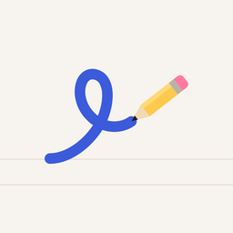
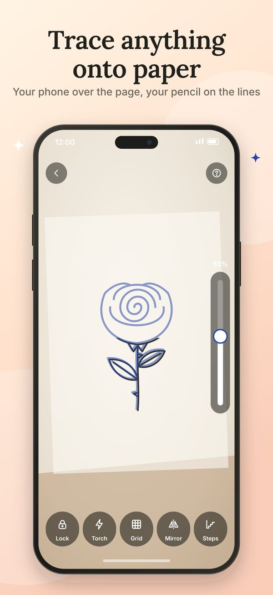
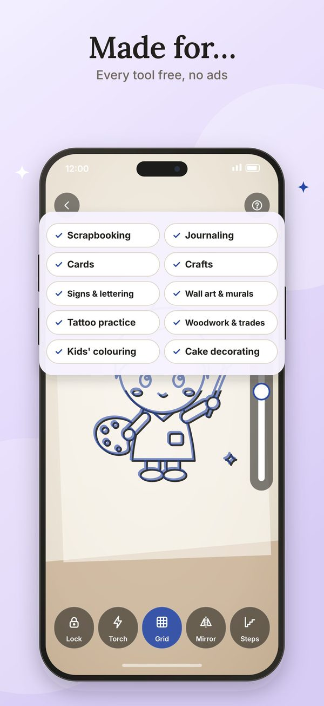
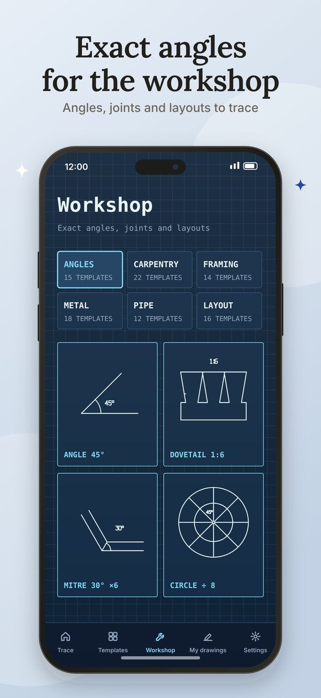
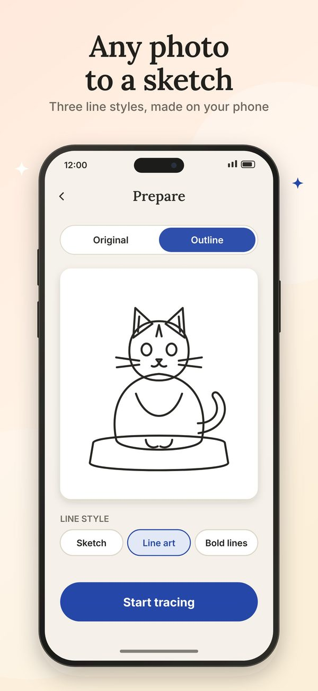
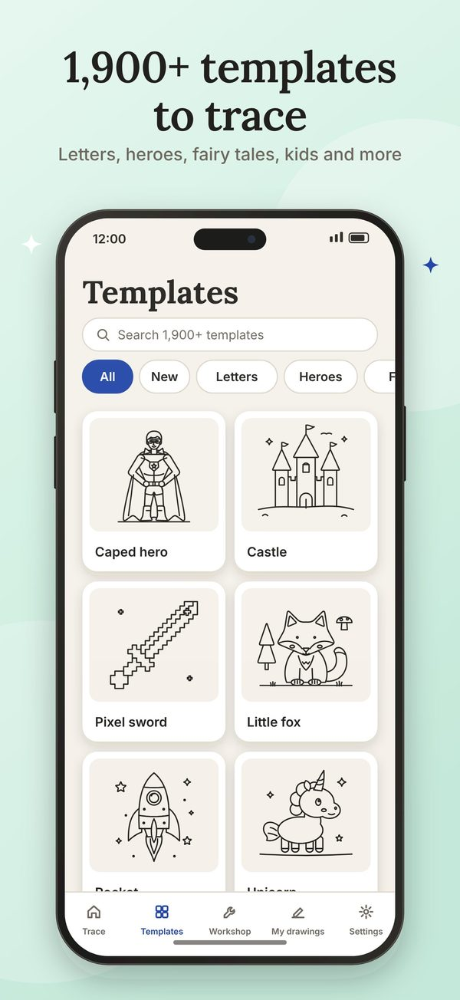
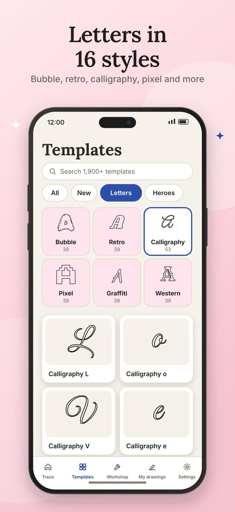
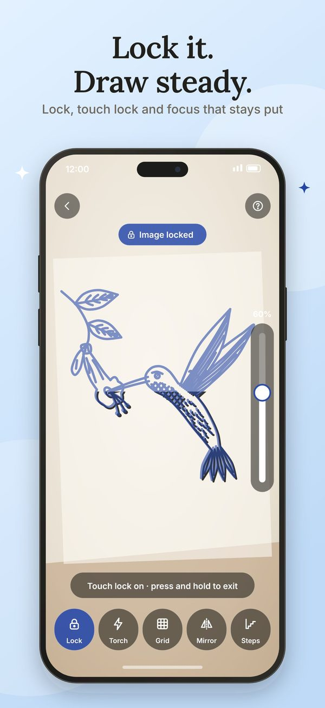
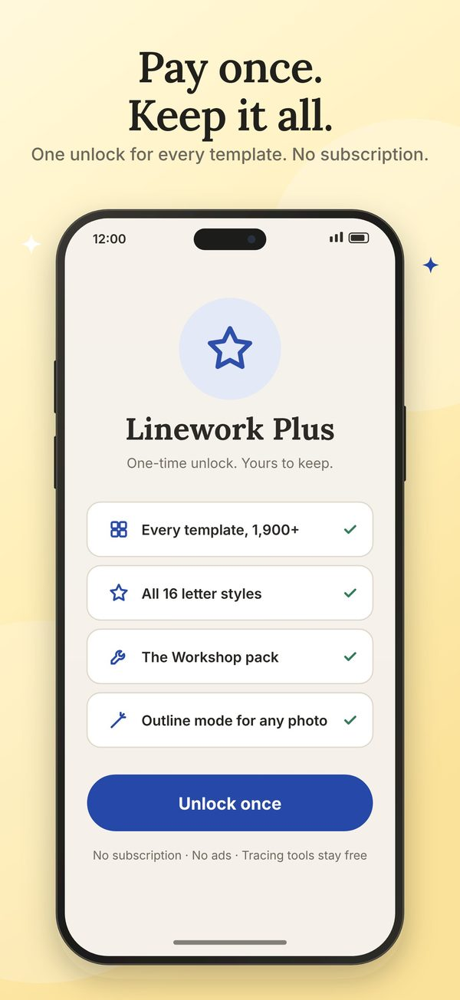

Linework
Trace photos onto real paper
Free for 14 days, then tracing your own photos stays free; Linework Plus unlocks the full library once for A$2.99








Why people switch to Linework
No subscription, no ads
Tracing your own photos stays free with every tool. Linework Plus is one A$2.99 payment for the full library and photo-to-outline. Most tracing apps charge US$6-10 a week.
It stays on the paper
Lock the picture, rest your hand on the screen and keep focus while you draw, so the image doesn't slide or blur as your hand moves in.
1,900+ original templates
Kawaii and chibi, tattoo flash, animals, fairy tales, letters in 16 styles, and a Workshop of exact angles and joints for trades. Plus photo to sketch on the phone.
How Linework compares
| Linework | Typical tracing app | |
|---|---|---|
| Price | Free to trace your photos; A$2.99 once for everything | Usually US$6-10 a week or US$30-70 a year |
| Ads | None | Common, sometimes mid-drawing |
| Trace your own photo | Free | Often behind the subscription |
| Keeping the image still | Picture lock, touch lock, focus lock | Drift and refocusing are frequent complaints |
| Timelapse | Up to 10 minutes, no watermark, guide never recorded | Often watermarked |
| Account or data | No account, Data Not Collected | Varies |
Questions
Is tracing cheating?
No. Artists have traced with projectors, lightboxes and grids for centuries. Tracing helps you learn proportions and line confidence; Linework's Sketch steps reveal a picture from big shapes to fine lines so you build it the way artists do.
How do I trace a picture from my phone without it moving?
Stand the phone on a glass, a stack of books or a stand above the paper, then tap Lock. Touch lock lets your hand rest on the screen, and focus stays put while locked, so the picture holds still.
Is there a free AR drawing app without a subscription?
Linework is free for 14 days with everything on. After that, tracing your own photos with every tool and 24 starter templates stays free, with no ads. The full library is a one-time A$2.99.
Can I turn a photo into a sketch to trace?
Yes. Photo to sketch makes clean line art on the phone in four styles, with detail and line-thickness controls. Nothing is uploaded.
Does it work without the camera?
Yes. Lightbox mode shows the picture full-bright on a white screen so you can trace through thin paper laid over the phone or tablet.